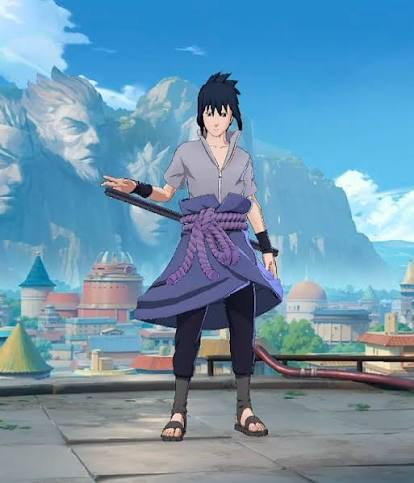

Thunderous drums and gongs, blazing lights. Suyou lay leisurely on the ledge of a tall building, with his hands behind his head. His lips curled into a smile as he took in the hustle and bustle of Zhu'an at night. A prosperous city reflected in his eyes. Underneath the eaves, laughter could be heard as children wearing traditional Nuo masks ran by. "Immortal Nuo, bless the land, Immortal Nuo, our most auspicious guardian! " Little did the carefree children know that listening right above them was Suyou, the last successor of the Exorcists of Nuo, with the sacred Nuo mask and blade, looking down with a smile. Suyou hopped to his feet like a spring and enjoyed a long stretch. He just had just woken up from a dream about the past. More than a decade ago, the sky darkened overhead and the wind howled as wails could be heard from all directions. The lingering obsessions and evil thoughts of the dead had gathered in this place, creating a phenomenon known as echoes of malice, and threatening to consume the entire village. A young Suyou could only cower in fear among the rubble and wait helplessly for death to claim him. Suddenly, a massive figure broke through the clouds with a trident in hand. His fierce stature stood between the village and the echoes of malice like an angry mountain. In the next moment, a nimble figure wielding a sacred blade darted past Suyou, towards the evil scourge. It was an Exorcist of Nuo. With one cut, he split the sky. With another, he swept away the scourge like freshly fallen dust. There was no need for a third. That day, the fearsome power of the Immortal Nuo was etched deep into a boy's heart. Inspired by the miracle he had witnessed, Suyou decided to travel the land, helping people in any way he could, like his savior. Ten years passed, and Suyou found himself following some leads to a small town near Zhu'an in the Cadia Riverlands. The town was shrouded in echoes so thick that one wondered how anything could even survive in such a place. But the townsfolk lived on in bliss, ignorant of the danger they were in. Strange phenomena would form due to the concentration of echoes, only for the townsfolk to look away without a care in the world. Suyou soon found the reason. An old exorcist was living in the town and had been maintaining some kind of fragile balance. The very one who had saved him all those years ago.
Fun Fact: Suyou, the Mask of the Immortal, is unique because he doesn't have an ultimate skill; instead, his six distinct abilities trigger simply by tapping (Mortal Form) or holding (Immortal Form) his skill buttons, letting him instantly switch between an agile assassin and a tanky